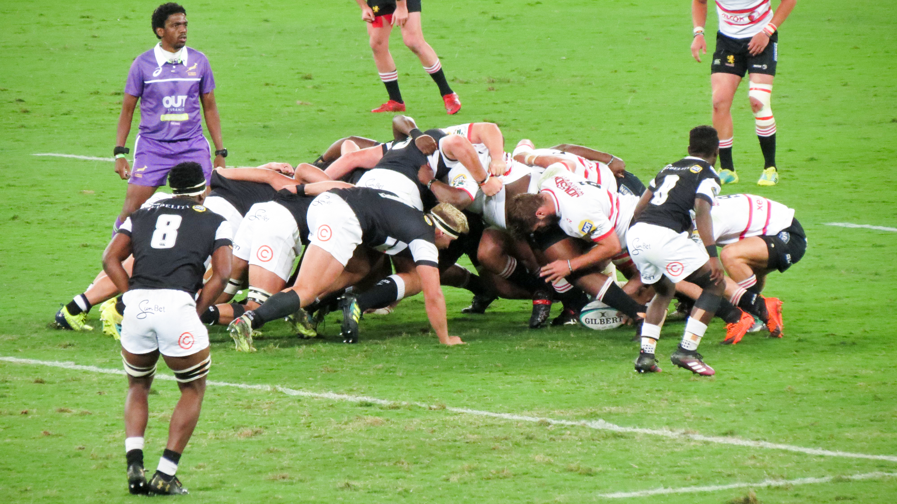
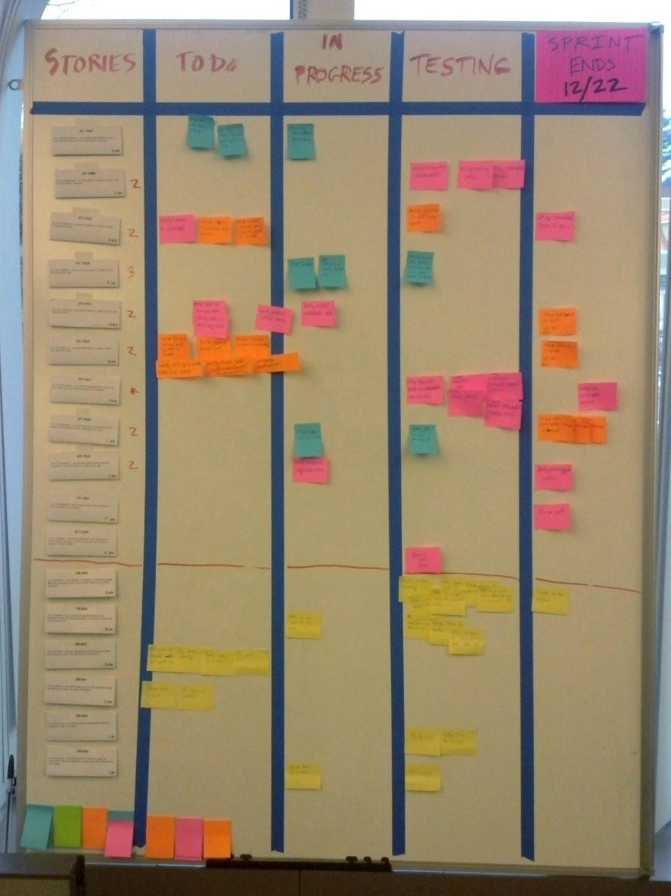
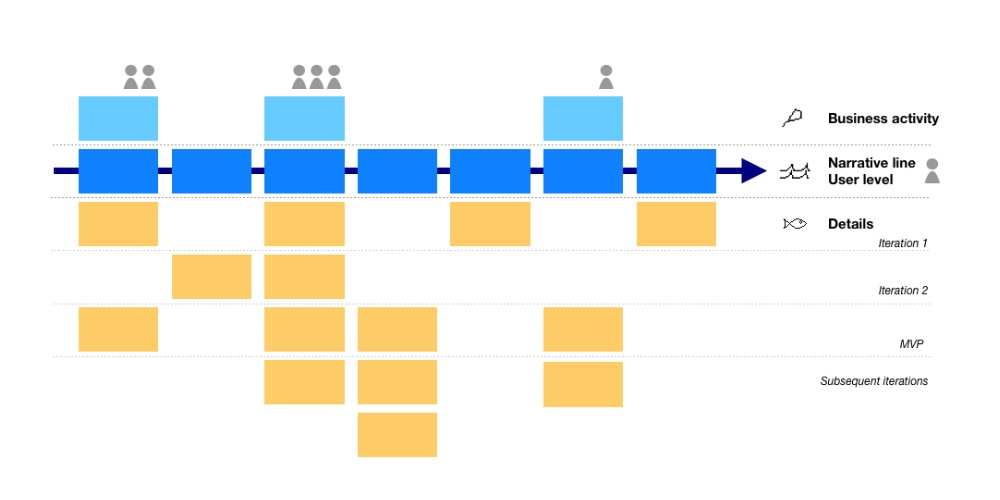
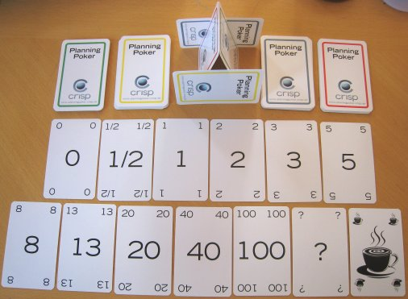
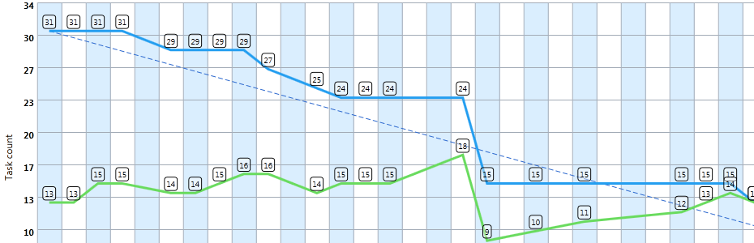
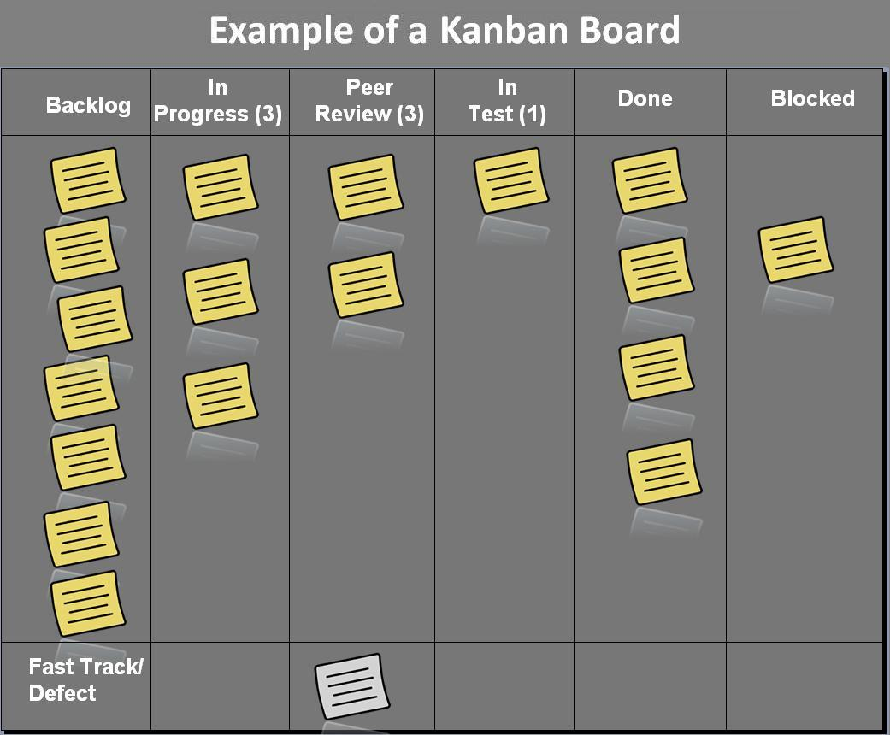

Compendio ilustrado con fotografías de fuentes oficiales, esquemas vectoriales y taller práctico por parejas.

📷 Fotografía Real: Formación de Melé (Scrum) en Rugby – Metáfora de Takeuchi & Nonaka (1986)| Dimensión | Cascada (Waterfall) | Scrum (Ágil) |
|---|---|---|
| Planificación | Exhaustiva e inamovible al inicio (Big Upfront). | Adaptativa y continua por Sprints de 1-4 semanas. |
| Gestión del Cambio | El cambio es visto como un riesgo costoso. | El cambio se abraza como ventaja competitiva. |
| Retorno de Inversión | Tardío (solo al final de la fase de despliegue). | Temprano y continuo desde el primer Sprint. |
Valoramos más los elementos de la izquierda que los de la derecha:
Unidad fundamental de Scrum sin jerarquías ni sub-equipos:
Descripción formal del estado del Incremento cuando cumple con las medidas de calidad exigidas.

📷 Fotografía Real: Tablero Físico de Tareas Scrum con Post-its (Wikimedia Commons)Define el propósito y trabajo del Sprint en 3 fases secuenciales:
15 minutos diarios a la misma hora para inspeccionar el progreso hacia el Sprint Goal.
Inspección del Incremento con interesados y adaptación de la Pila de Producto.
Inspección interna de personas, procesos y herramientas para definir 1 mejora concreta.
Como [Rol] Quiero [Acción] Para [Beneficio].

📷 Fotografía Real: Sesión de User Story Mapping y organización de requisitos en pared (Wikimedia Commons)Estimación relativa mediante la serie de Fibonacci modificada para evitar el efecto ancla.

📷 Fotografía Real: Baraja Oficial Crisp Planning Poker por Henrik Kniberg (Citada en el PDF 03 del curso)Muestra la cantidad de trabajo restante (eje Y) a lo largo del tiempo del Sprint (eje X).

📊 Gráfico Real: Burndown Chart de seguimiento diario de trabajo pendiente (Wikimedia Commons)
📷 Fotografía Real: Tablero Kanban físico con límites WIP en equipo de ingeniería (Wikimedia Commons)Pon en práctica la división de tareas, asignación de roles (PO / SM / Devs), estimación con Planning Poker y la gestión de un Tablero Kanban desarrollando una aplicación JavaScript sencilla (TaskSprint JS).